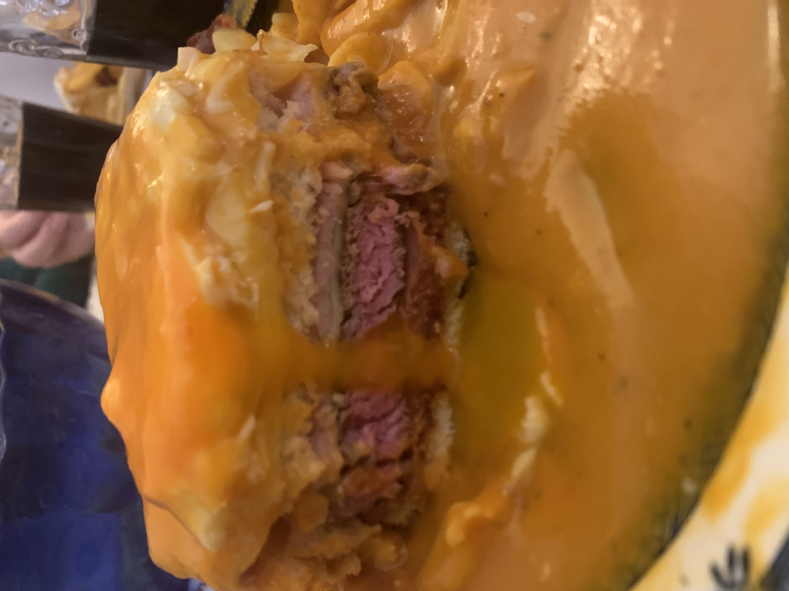

How to do a Francesinha:

First you need to know some story about Francesinha
Francesinha is a traditional dish from Porto's city, one of the best dishes.
Everyone in Porto will tell you a different best place to eat it, but what all these places have in common is they all go to Mercado do Bolhão to find the best quality ingredients.
What/Where is Mercado do Bolhão
If you want to know everything about Mercado do Bolhão you can find it here!
Long story short, Mercado do Bolhão provides the best portuguese linguiça sausage and fresh sausage to Francesinha mix, the best house to find them is Leandro's Sausage Shop inside Mercado do Bolhão

Francesinha Ingredient's:
So enough talking, Francesinha consists of:
- Francesinha Sauce
- Bread
- Ham
- Cheese
- Beef fillets
- Portuguese Linguiça Sausage
- Fresh Sausage
- Egg (Optional)
- French Fries
How to assemble Francesinha
- First of all I wouldn't try to make the sauce on your own, probably buy one premade from here, just because francesinha is a hard and very expensive sauce to do without being in bulk, must of the ingredients wont be fully used
- Now with that out of the way, let's make the famous Porto sandwich, with all the sausage's, beef fillets prepared and bread toasted, assemble the bread like this:
- Now just add the beef fillet, ham, cheese and another bread, like so:
- To finish top it off with 4 or 5 cheese slices
- Put it in the oven until cheese is melted and voila, just need to add the sauce. *If you want with egg, the best option EMO you can do it now as well*
